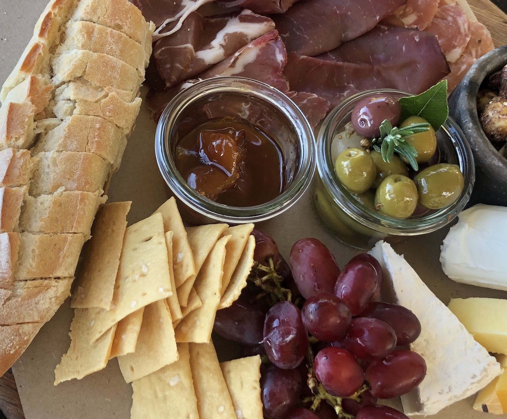
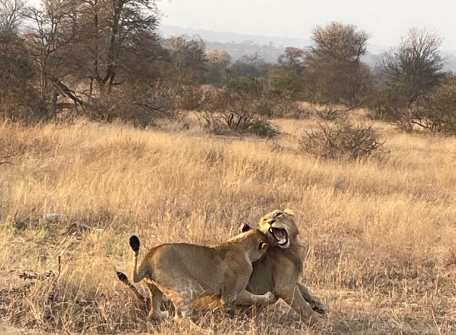
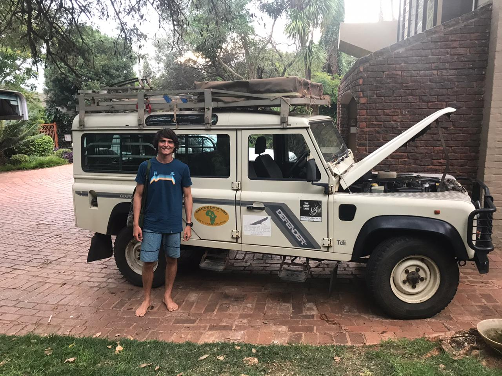

|
Venue: The wedding will take place at the Olwandle estate which is located here in KwaZulu-Natal, South Africa. |
|
Some of you, particularly those coming from Alaska, might think, holy moly, this is happening in AFRICA? In fact, this wedding will take place in South Africa, which is one of the only logically named countries in the world. If every place had a name that was as informative as South Africa, Max wouldn't be lost all the time! Max has some suggestions for new names for places e.g., |
|

This cost, like, $20, including multiple glasses of wine. |

The view from Emily's backyard. Jokes aside, this was at Simbavati, which we highly recommend. (All though there are lots of other great safaris too!) |

Public transit in Africa is nonexistent so, we highly recommend renting your dream truck for the duration of your stay, e.g., here. |
|
Where to stay: Olwandle Estate is roughly 15m outside of both Ballito and Salt Rock. Both are adorable surfing towns chalk full of delicious food, beautiful beaches, and lots to do. We recommend you stay in either of these towns and rent a car so you can explore the other as well as attend the wedding. We recommend Petite Province B&B, Salt Rock Hotel (the website doesn't always work on the first try, just FYI), or Canelands Beach Club. Notably, the Salt Rock Hotel has excellent curry. All of these options are right on the beach and highly accessible with great food nearby. |
|
Travel: For foreign visitors (that means you, Americans) we suggest flying into King Shaka International Airport.¹ It's 15 minutes from Ballito. |
|
Things that we recommend doing include:
|
|
Nearby game parks: You are in AFRICA so you should go do "safari". A prime example would be going to a game park! Here are some very cool nearby game parks which we recommend:
|
¹ You should google King Shaka.